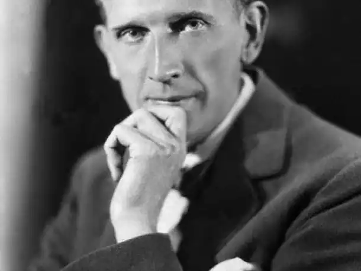
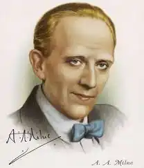
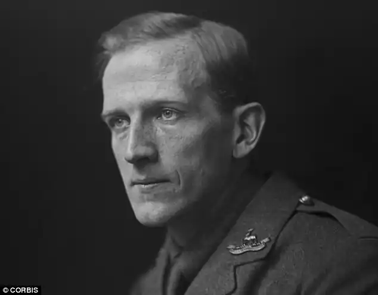

Алан Александр Мілн (1882-1956), англійський письменник, відомий своїми творами для дітей. В його віршованих книжках "Коли ми були дуже юні" (1924) і "Тепер нам уже шість" (1927) вперше з'явився образ Крістофера Робіна, хлопчика, прототипом якого став син Мілна. Його прозаїчні книжки "Вінні Пух" (1926) і "Дім на Пуховому узліссі" (1928) розповідають про пригоди плюшевого ведмедика Вінні Пуха, іграшки Крістофера Робіна.
Народився Мілн 18 січня 1882 р. у Лондоні. Освіту здобув у Вестмінстер-скул та Трініті-коледжі Кембріджського університету. В 1906-1914 рр. був помічником видавця журналу "Панч". Під час служби в армії, коли йшла Перша світова війна, почав писати п'єси. Після поранення у Франції 1919 р. демобілізувався і цілком присвятив себе літературі.
Неймовірна популярність дитячих книжок Мілна затьмарила його успіхи в інших жанрах. Проте чарівними є його гуморески для журналу "Панч". Він написав одну з кращих детективних мелодрам "Повне алібі", опубліковану в збірці "Чотири п'єси" (1932), і оповідання, яке стало класикою, "Таємниця Червоного Будинку" (1921). Інші його твори для театру, в тому числі "Містер Пім проходить мимо" (1919), "Правда про Блейдів" (1921) та "Дорога на Дувр" (1922), мали успіх у публіки та схвальні відгуки професійних критиків. Книжка, що спричинила відгуки суперечливі, "Світ з честю" (1934), містила палкий протест проти війни. Серед інших творів Мілна можна визначити "Автобіографію" (1939) та роман "Хлоя Марр" (1946). Помер Мілн в своєму домі в графстві Суссекс 31 січня 1956.